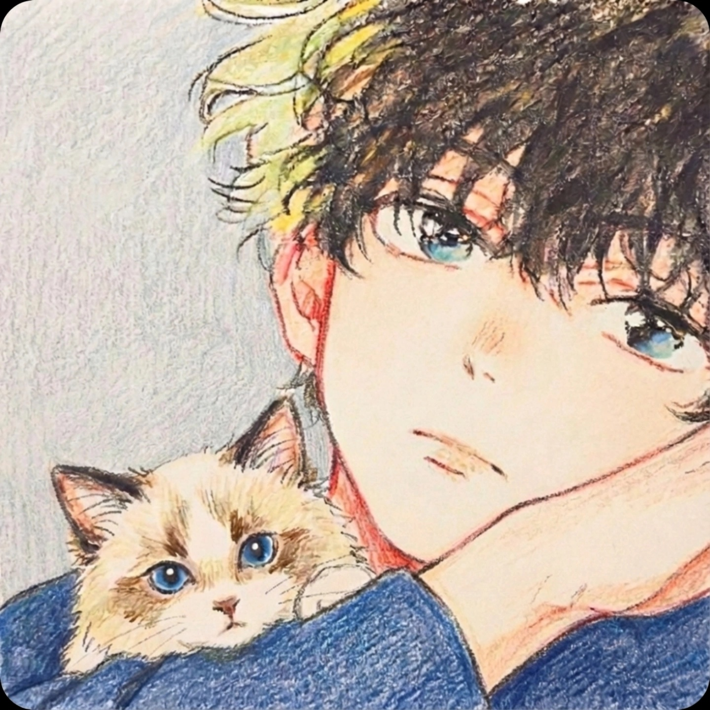

Technical Showcase / Personal Lab
I build long-term AI projects, with LLM systems as the main focus.
This site is my public workspace for engineering and research output: LLM applications, computer vision work, and product-oriented experiments.
Each project is designed to be explainable, reviewable, and practical beyond a single demo.
What’s Next
- LLM project collection: from prototype to deployable version.
- Research logs: papers, experiments, and iteration records.
- Practical pages: focused on clear product value.
Profile
About
Background, research interests, publications, and my technical roadmap.
Open AboutProjects
Posts
LLM and AI project pages with goals, architecture, and implementation notes.
Open PostsListening
Wudangdao
Long-form listening page with searchable episodes and resume playback.